import starsim as ss
ss.options(jupyter=True)Solutions
These are solutions to the exercises at the end of each tutorial. Many of the exercises are open-ended, so these are examples: there are often other good answers. Each section starts from its tutorial’s model, so it can be run on its own.
T1 – Getting started
Exercise 1
Suppose people with measles were infectious for only 5 days, with the same β. What would R0 be? Change the model, run it, and check the R0 the run prints. How does the epidemic change?
R0 = β × the infectious period = 1.9 × 5 = 9.5, which the second run prints. With a shorter infectious period, people recover sooner, so fewer are infectious at once, and the peak is lower; but since R0 is still well above 5, almost everyone is still infected.
S, I, R = ss.states('S I R')
infection = S >> I @ 1.9*I
recovery8 = I >> R @ ss.days(8) # Infectious for 8 days, as in the tutorial
recovery5 = I >> R @ ss.days(5) # Infectious for 5 days instead
measles8 = ss.Disease(infection, recovery8, init_prev=0.001, name='measles')
measles5 = ss.Disease(infection, recovery5, init_prev=0.001, name='measles')
sim8 = ss.Sim(measles8, total_pop=100_000, stop=ss.days(50))
sim5 = ss.Sim(measles5, total_pop=100_000, stop=ss.days(50))
msim = ss.parallel({'Infectious for 8 days': sim8, 'Infectious for 5 days': sim5})
msim.plot('measles.I')MultiSim: 2 runs of 2 scenarios (Infectious for 8 days, Infectious for 5 days)
Done in 0.13 s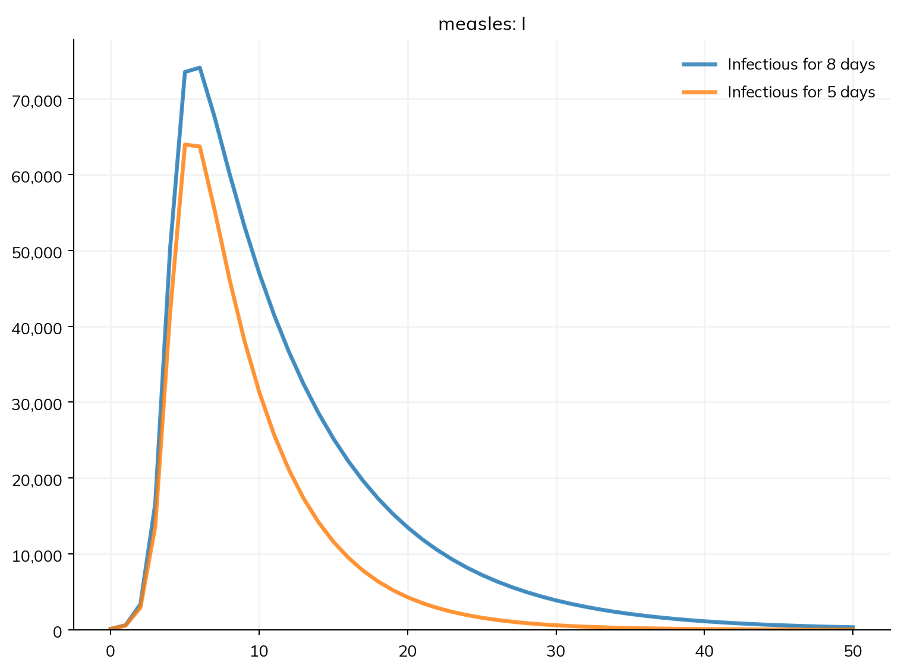
Exercise 2
Run the agent version of the model with 1,000 agents instead of 10,000 (each standing for 100 people). What changes in the plot, and why?
Surprisingly little: in an epidemic this large, which infects almost everyone, even 1,000 agents follow the same course, and the two curves differ by little more than chance. What changes is the detail. Each agent now stands for 100 people, so the results move in steps of 100, and chance plays a larger part with fewer agents (try another rand_seed= to see how much the curve moves). This matters most when following small numbers, such as the first or last few cases of an outbreak.
S, I, R = ss.states('S I R')
infection = S >> I @ 1.9*I
recovery = I >> R @ ss.days(8)
measles = ss.Disease(infection, recovery, init_prev=0.001)
many = ss.Sim(measles, total_pop=100_000, n_agents=10_000, stop=ss.days(50))
few = ss.Sim(measles, total_pop=100_000, n_agents=1_000, stop=ss.days(50))
msim = ss.parallel({'10,000 agents': many, '1,000 agents': few})
msim.plot('measles.I')MultiSim: 2 runs of 2 scenarios (10,000 agents, 1,000 agents)
Done in 0.15 s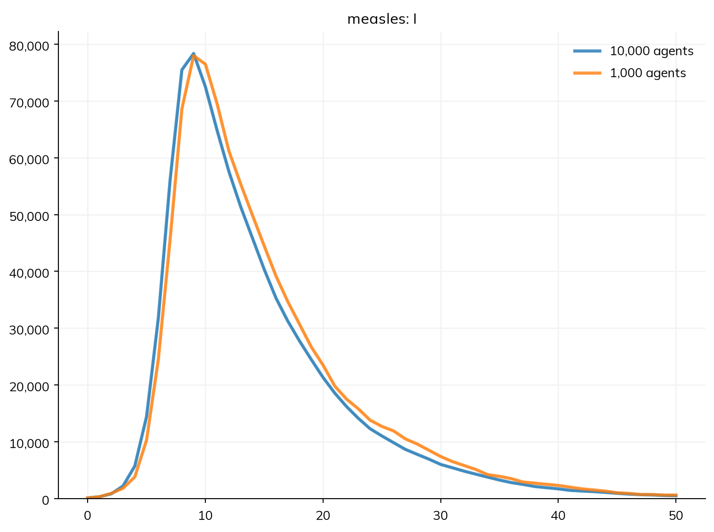
Exercise 3
Using the output of describe(), find out how Starsim assumes that people mix, and how long people stay infectious (the distribution as well as the average).
Under “Mixing and interventions”, describe() says that mixing is homogeneous (everyone mixes with everyone else equally), marked as guessed, since no contacts were given. Under recovery, it says that the time in I is exponentially distributed, with a mean of 8 days (time in I ~ exponential(mean = 8 days)), also marked as guessed.
sim = ss.Sim(measles, total_pop=100_000, stop=ss.days(50))
sim.describe()Sim 1 module, 100,000 people, days 0 to 50
| solver | ode | guessed: every part of the model has a compartmental form |
| unit | day | from the typed values in the model |
Disease 'measles' 3 states, 2 transitions
| states | S, I, R | |
| I infectious | ||
| init: init_prev = 0.001; the rest in S | ||
| infection | S -> I transmission, from I | |
| beta = 1.9 per day | ||
| rate = 1.9 × I.n / N | homogeneous mixing | |
| recovery | I -> R spontaneous | |
| time in I ~ exponential(mean = 8 days) | guessed: scalar duration |
Mixing and interventions
| mixing | homogeneous, 1 contact per day | guessed: no network given |
Results and running
| results | S, I, R, and one flow per transition | |
| schedule | every day: measles |
Notes
| note | unit='day' (from the typed values in the model) |
T2 – Building a model
import starsim as ss
ss.options(jupyter=True)Exercise 1
A town of 2,000 people has had no measles for many years, and 70% of its people are immune. Five people arrive with measles. Using init and init_n, model the outbreak over a year. How many people are infected? Is the reproduction number at the start above or below 1?
With 30% of people susceptible, the reproduction number at the start is 15.2 × 0.3 ≈ 4.6 (which the run prints after R0, as R = 4.56 at the start), well above 1. Almost all of the 600 susceptible people are infected. The run also notes that with only 5 people infected at the start, whether an outbreak takes off is partly a matter of chance, which the ODE doesn’t show; as the note says, running the model many times with a stochastic solver (solver='gillespie', with ss.parallel(n_runs=...)) does.
S, I, R = ss.states('S I R')
infection = S >> I @ 1.9*I
recovery = I >> R @ ss.days(8)
measles = ss.Disease(infection, recovery, init=dict(R=0.7), init_n=dict(I=5))
sim = ss.Sim(measles, total_pop=2_000, stop=ss.days(365))
sim.run()
print('Infections:', round(sim.results.measles.infection.sum()))Sim: measles, 2,000 people, as an ODE, days 0 to 365
measles: R0 = 15.2 (R = 4.56 at the start, with 30% susceptible), with 5 infectious at the start
Note: "measles" starts with 5 infected, so whether it takes off is a matter of chance, which solver="ode" does not show; solver="gillespie" with ss.parallel(n_runs=...) does
Done in 0.002 s; measles: 588 infections; at most 270 infectious, on day 14
Infections: 588Exercise 2
Using the final size relation, a model with R0 = 1.5 should infect about 58% of people. Choose β to give R0 = 1.5 with an infectious period of 8 days, run the model for long enough for the outbreak to end, and check.
β = R0 / the infectious period = 1.5 / 8 ≈ 0.19 per day. The outbreak is much slower than with R0 = 15, so it needs about two years to end.
S, I, R = ss.states('S I R')
infection = S >> I @ (1.5/8)*I
recovery = I >> R @ ss.days(8)
measles = ss.Disease(infection, recovery, init_prev=0.001)
sim = ss.Sim(measles, total_pop=100_000, stop=ss.days(730))
sim.run()
print('Share infected:', round(sim.results.measles.R[-1] / 100_000, 2))Sim: measles, 100,000 people, as an ODE, days 0 to 730
measles: R0 = 1.5, with 100 infectious at the start
Done in 0.0016 s; measles: 58,292 infections; at most 6,369 infectious, on day 91
Share infected: 0.58Exercise 3
Change the model to density-dependent transmission (I.n), choosing β so that R0 is still 15 in a town of 100,000. Then run it in a town of 10,000 and of 1,000,000. How does the outbreak change with the size of the town, and how does this differ from the frequency-dependent model?
With density-dependent transmission, R0 = β N × the infectious period, so for R0 = 15.2 in a town of 100,000, β = 15.2 / (100,000 × 8) = 1.9 × 10⁻⁵ per infectious person per day. In a town of 10,000, R0 is then only 1.5, so the outbreak is slow and infects about 60% of people; in a town of 1,000,000, R0 is 152, and almost everyone is infected within days. With frequency-dependent transmission, R0 and the shares infected would be the same in towns of every size. Each run prints its R0 as it starts, with verbose=1, and sim.diseases.measles.R0() gives it.
beta = 1.9e-5 # Per infectious person per day
for pop in [10_000, 100_000, 1_000_000]:
S, I, R = ss.states('S I R')
infection = S >> I @ beta*I.n
recovery = I >> R @ ss.days(8)
measles = ss.Disease(infection, recovery, init_n=dict(I=10))
sim = ss.Sim(measles, total_pop=pop, stop=ss.days(365), verbose=0)
sim.run()
res = sim.results.measles
print('Town of', pop, ' share infected:', round(res.R[-1] / pop, 2), ' peak infectious:', round(res.I.max()))Town of 10000 share infected: 0.6 peak infectious: 673
Town of 100000 share infected: 1.0 peak infectious: 75229
Town of 1000000 share infected: 1.0 peak infectious: 951751T3 – Building a disease
import starsim as ss
ss.options(jupyter=True)Exercise 1
Measles has a latent period of 10 to 12 days. Run the SEIR model with a latent period of 12 days, using pars=. Does R0 change? How do the timing and height of the peak change?
R0 doesn’t change (15.2), since it depends only on β and the infectious period. A longer latent period makes the generation time longer, so the epidemic grows more slowly: it peaks about 3 days later, and a little lower.
S, E, I, R = ss.states('S E I R')
beta = ss.par(1.9, bounds=[1, 3], doc='Transmission rate per day')
dur_latent = ss.par(ss.days(10), bounds=[ss.days(7), ss.days(14)], doc='Average latent period')
dur_infectious = ss.par(ss.days(8), doc='Average infectious period')
infection = S >> E @ beta*I
progression = E >> I @ dur_latent
recovery = I >> R @ dur_infectious
measles = ss.Disease(infection, progression, recovery, init=dict(I=0.001))
latent10 = ss.Sim(measles, total_pop=100_000, stop=ss.days(150))
latent12 = ss.Sim(measles, pars=dict(dur_latent=ss.days(12)), total_pop=100_000, stop=ss.days(150))
msim = ss.parallel({'Latent period of 10 days': latent10, 'Latent period of 12 days': latent12})
msim.plot('measles.I')MultiSim: 2 runs of 2 scenarios (Latent period of 10 days, Latent period of 12 days)
Done in 0.16 s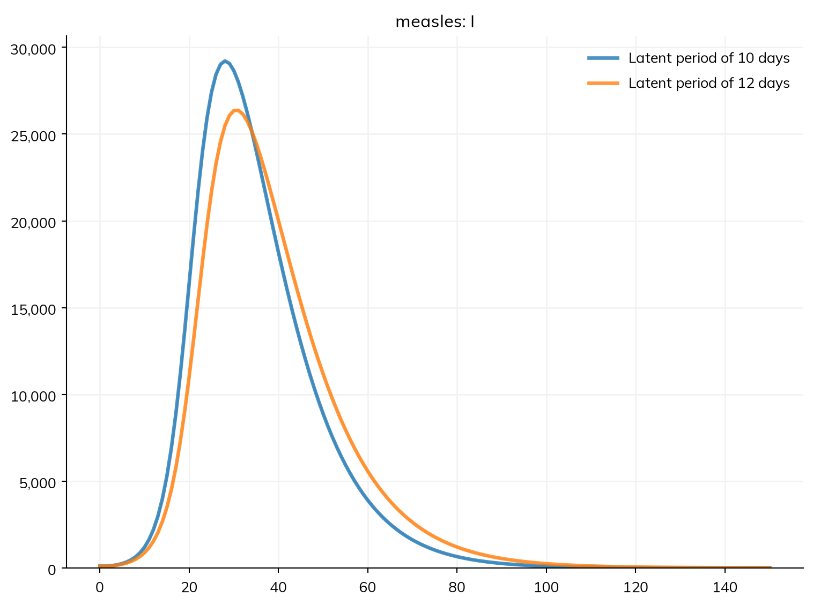
Exercise 2
Give the infectious period an Erlang distribution too, with k=4. Using R0() and a plot of I, check whether R0 or the course of the epidemic changes.
R0 is unchanged, since the average infectious period is still 8 days. The epidemic peaks a few days sooner and higher: with an exponential infectious period, some people stay infectious for a long time, which spreads their infections out, whereas with an Erlang distribution most people are infectious for close to 8 days.
S, E, I, R = ss.states('S E I R')
infection = S >> E @ 1.9*I
progression = E >> I @ ss.days(10)
recovery = I >> R @ ss.days(8)
measles = ss.Disease(infection, progression, recovery, init=dict(I=0.001))
exponential = ss.Sim(measles, total_pop=100_000, stop=ss.days(150))
S, E, I, R = ss.states('S E I R')
infection = S >> E @ 1.9*I
progression = E >> I @ ss.days(10)
recovery = I >> R @ ss.erlang(k=4, mean=ss.days(8)) # An Erlang infectious period
measles = ss.Disease(infection, progression, recovery, init=dict(I=0.001))
erlang = ss.Sim(measles, total_pop=100_000, stop=ss.days(150))
erlang.run()
print('R0:', round(erlang.diseases.measles.R0(), 1))
msim = ss.parallel({'Exponential': exponential, 'Erlang': erlang})
msim.plot('measles.I')Sim: measles, 100,000 people, as an ODE, days 0 to 150
measles: R0 = 15.2, with 100 infectious at the start
Done in 0.0016 s; measles: 99,900 infections; at most 36,390 infectious, on day 25
R0: 15.2
MultiSim: 2 runs of 2 scenarios (Exponential, Erlang)
Done in 0.16 s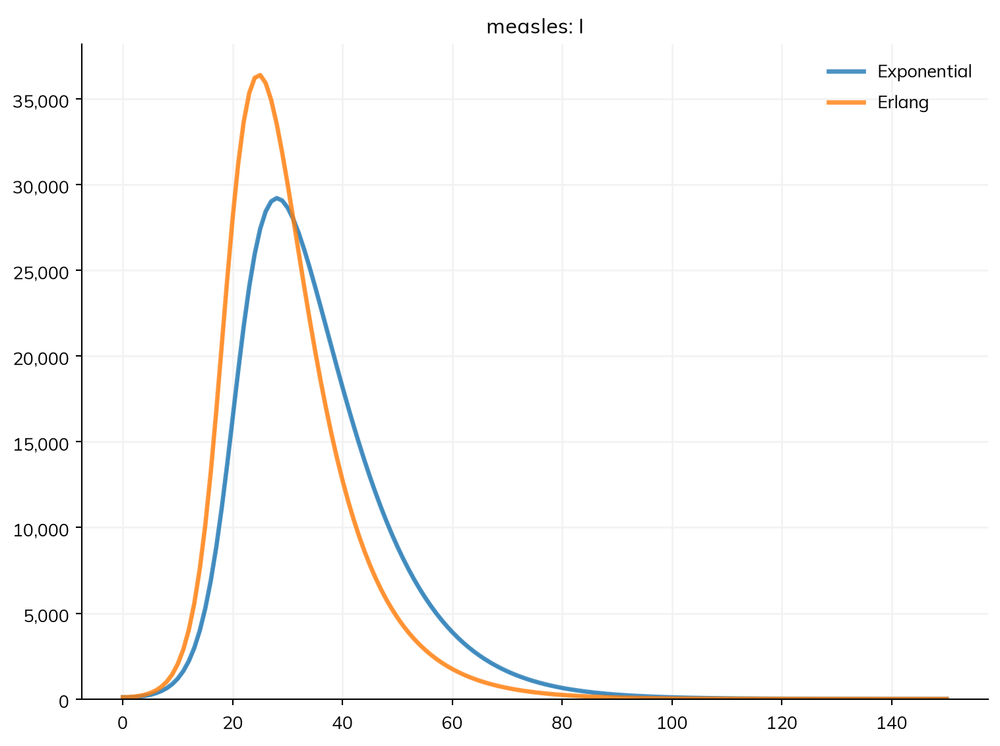
Exercise 3
About 1 in 10 people with measles in this town are admitted to hospital, after 4 days of being infectious on average, and stay for 7 days. Add a state for people in hospital (assume they don’t transmit), and find the largest number of people in hospital at once.
People leaving I now branch: 10% go to hospital (H) after 4 days on average, and 90% recover after 8. People in hospital are not in I, so they don’t transmit, which is why R0 falls a little, to 14.4: those admitted are infectious for 4 days instead of 8.
S, E, I, H, R = ss.states('S E I H R')
infection = S >> E @ 1.9*I
progression = E >> I @ ss.days(10)
admission = ss.Transition(I, H, dur=ss.days(4), p=0.1) # 10% go to hospital...
recovery = ss.Transition(I, R, dur=ss.days(8), p=0.9) # ...and the rest recover
discharge = H >> R @ ss.days(7)
measles = ss.Disease(infection, progression, admission, recovery, discharge, init=dict(I=0.001))
sim = ss.Sim(measles, total_pop=100_000, stop=ss.days(150))
sim.run()
print('Most people in hospital at once:', round(sim.results.measles.H.max()))
sim.results.measles.H.plot()Sim: measles, 100,000 people, as an ODE, days 0 to 150
measles: R0 = 14.4, with 100 infectious at the start
Done in 0.0018 s; measles: 99,900 infections; at most 27,872 infectious, on day 28
Most people in hospital at once: 2440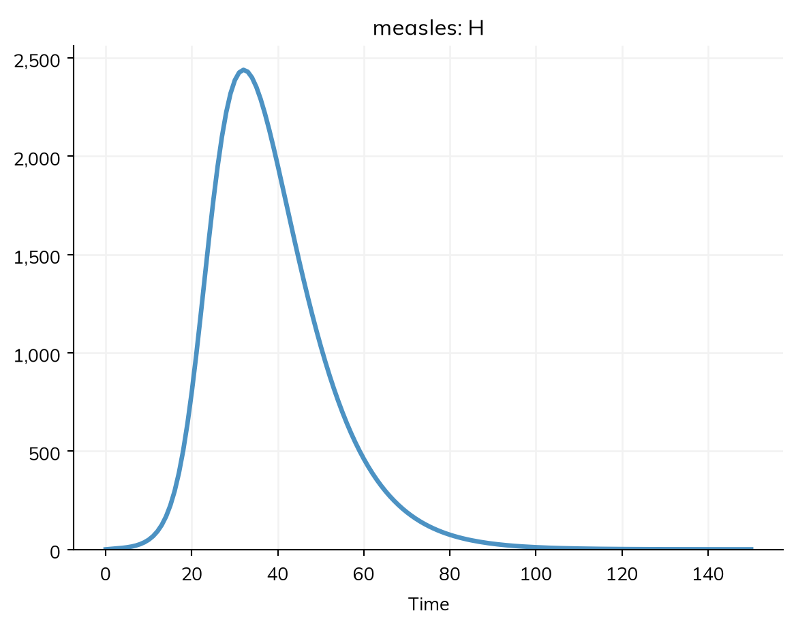
T4 – Age groups and contacts
Each solution starts from the model of the tutorial: measles in a town of 100,000 people in three age groups, with immunity by age and a contact matrix.
import starsim as ss
ss.options(jupyter=True)
def make_measles(immune=ss.by(age=[0.8, 0.92, 0.98])):
""" The measles model of T4, with the share immune in each age group given """
S, E, I, R = ss.states('S E I R')
beta = ss.par(0.14, bounds=[0.05, 0.5])
infection = S >> E @ beta*I
progression = E >> I @ ss.days(10)
recovery = I >> R @ ss.days(8)
measles = ss.Disease(infection, progression, recovery, init=dict(R=immune), init_n=dict(I=10), name='measles')
measles.stratify(age={0: 0.3, 15: 0.6, 65: 0.1})
return measles
matrix = [[10, 6, 1], [3, 8, 1], [3, 6, 3]]
settings = dict(total_pop=100_000, start='2025-01-01', stop='2026-01-01', verbose=0)1. Fewer contacts between children.
measles = make_measles()
open_schools = ss.contacts(ages=[0, 15, 65], matrix=matrix)
closed_schools = ss.contacts(ages=[0, 15, 65], matrix=[[5, 6, 1], [3, 8, 1], [3, 6, 3]])
for label, contacts in {'Schools open': open_schools, 'Schools closed': closed_schools}.items():
sim = ss.Sim(measles, networks=contacts, label=label, **(settings | dict(verbose=1))) # verbose=1 to print R at the start
sim.run()
print(sim.results.measles.infection.by('age').summarize().round())Sim "Schools open": measles, 100,000 people, as an ODE, 2025-01-01 to 2026-01-01
measles: R0 = 15.8 (R = 2.46 at the start, with 11% susceptible), with 10 infectious at the start
Note: people do not age between the age groups, since nobody is born or dies; pass use_aging=True to age them
Done in 0.0017 s; measles: 8,795 infections; at most 934 infectious, on 2025-04-27
0-14 5461.0
15-64 3208.0
65+ 127.0
Name: infection, dtype: float64
Sim "Schools closed": measles, 100,000 people, as an ODE, 2025-01-01 to 2026-01-01
measles: R0 = 13.4 (R = 1.57 at the start, with 11% susceptible), with 10 infectious at the start
Note: people do not age between the age groups, since nobody is born or dies; pass use_aging=True to age them
Done in 0.0014 s; measles: 6,720 infections; at most 366 infectious, on 2025-07-29
0-14 3867.0
15-64 2745.0
65+ 107.0
Name: infection, dtype: float64The reproduction number at the start (R, in the line each run prints as it starts) falls from about 2.5 to about 1.6, and the outbreak is about a quarter smaller (6,700 infections rather than 8,800), and peaks three months later, at the end of July. Most of the infections prevented are in children, but adults and older adults have fewer infections too, though their own contacts have not changed: they are infected by children, and with fewer children infected, there are fewer infectious children for them to meet. (The matrix with fewer contacts between children is still reciprocal, since only the contacts of children with each other changed.)
2. The same immunity in every age group.
contacts = ss.contacts(ages=[0, 15, 65], matrix=matrix)
msim = ss.parallel({
'Immunity by age': ss.Sim(make_measles(), networks=contacts, **settings),
'90% immune at every age': ss.Sim(make_measles(immune=0.9), networks=contacts, **settings),
})
msim.plot('measles.infection')
for sim in msim.sims:
print(sim.label, '- infections:', round(sim.results.measles.infection.sum()))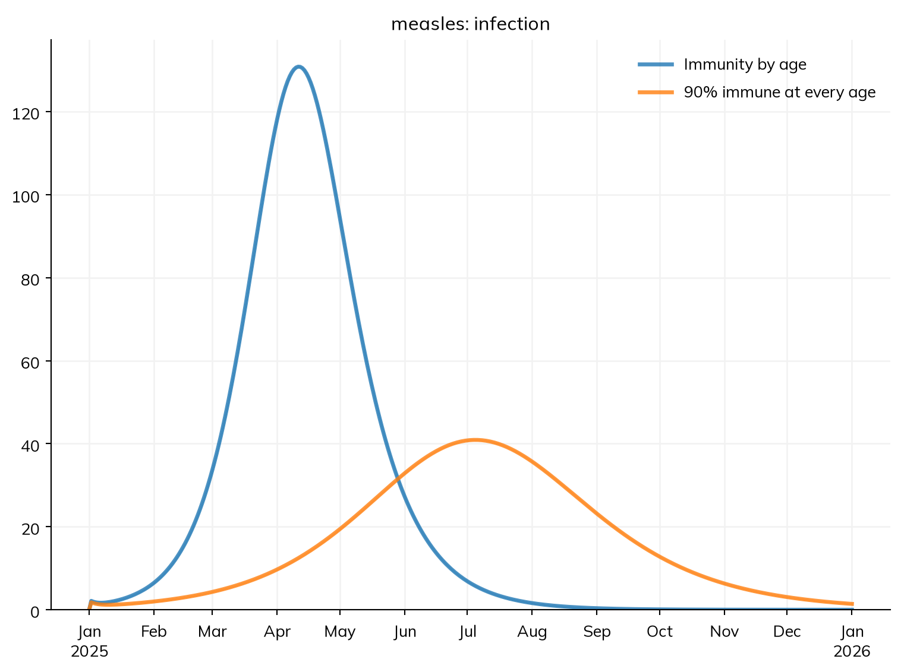
Immunity by age - infections: 8795
90% immune at every age - infections: 5856In the town of the tutorial, 0.3 × 80% + 0.6 × 92% + 0.1 × 98% ≈ 89% of people are immune, about the same as 90% at every age. Yet with the same immunity at every age, the reproduction number at the start is about 1.6 rather than 2.5, and the outbreak is a third smaller (5,900 infections rather than 8,800), though the number of people susceptible is almost the same. Where the susceptible people are matters, not only how many there are: a gap in immunity among children, who have the most contacts, gives measles far more chances to spread than the same gap spread evenly over the town. This is why measles programs track coverage by age and birth cohort, not only overall.
3. A higher birth rate.
demographics = lambda rate: [ss.birth(rate=ss.peryear(rate)), ss.death(rate=ss.peryear(0.02))]
long = dict(networks=contacts, total_pop=100_000, unit='day', dt=ss.weeks(1), start='2025-01-01', stop='2045-01-01', verbose=0)
msim = ss.parallel({
'30 births a year per 1,000': ss.Sim(make_measles(), demographics=demographics(0.03), **long),
'45 births a year per 1,000': ss.Sim(make_measles(), demographics=demographics(0.045), **long),
})
msim.plot('measles.I')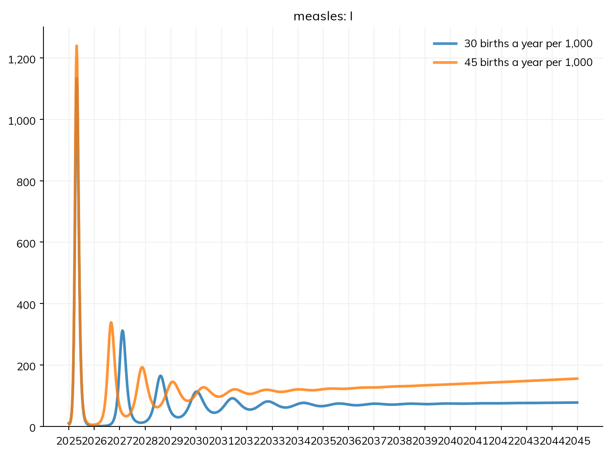
With more births, the outbreaks after the first come sooner and closer together, and settle sooner to a higher level of infection. Susceptible children are born faster, so the number needed for the next outbreak builds up sooner. (The population also grows faster, by 2.5% a year rather than 1%, which is why the level of infection keeps rising.)
T5 – Interventions and scenarios
Each solution starts from the model of the tutorial:
import starsim as ss
ss.options(jupyter=True)
def make_measles(init_n=10):
""" The measles model of T5, with the number infectious at the start given """
S, E, I, R = ss.states('S E I R')
beta = ss.par(0.14, bounds=[0.05, 0.5])
infection = S >> E @ beta*I
progression = E >> I @ ss.days(10)
recovery = I >> R @ ss.days(8)
measles = ss.Disease(infection, progression, recovery,
init = dict(R=ss.by(age=[0.8, 0.92, 0.98])),
init_n = dict(I=init_n),
name = 'measles',
)
measles.stratify(age={0: 0.3, 15: 0.6, 65: 0.1})
return measles
measles = make_measles()
contacts = ss.contacts(ages=[0, 15, 65], matrix=[[10, 6, 1], [3, 8, 1], [3, 6, 3]])
settings = dict(networks=contacts, total_pop=100_000, start='2025-01-01', stop='2026-01-01', verbose=0)1. The timing of the campaign. Run the campaign on each date, and compare the infections with those of no intervention:
sims = {'No intervention': ss.Sim(measles, **settings)}
for date in ['2025-02-01', '2025-03-01', '2025-05-01']:
campaign = ss.vaccinate(efficacy=0.93, where=measles.age < 15, coverage=0.8, at=date)
sims['Campaign on ' + date] = ss.Sim(measles, interventions=campaign, **settings)
msim = ss.parallel(sims)
msim.plot('measles.I')
msim.summarize().loc['measles_infection']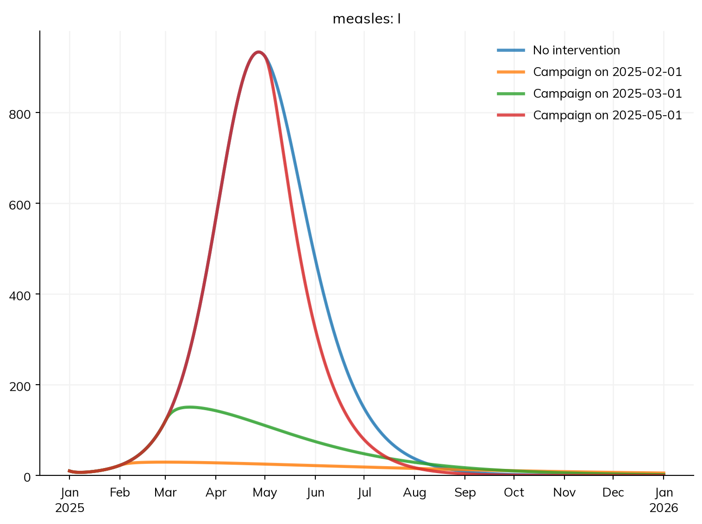
| value | |
|---|---|
| scenario | |
| No intervention | 8795.480637 |
| Campaign on 2025-02-01 | 775.688835 |
| Campaign on 2025-03-01 | 2209.958402 |
| Campaign on 2025-05-01 | 7753.103706 |
A campaign on 1 February prevents about 90% of the outbreak; on 1 March, about three quarters of it; on 1 May, when the outbreak is near its peak, only about one infection in eight. Every month of delay lets the outbreak grow by a large factor, so a campaign does the most good if it follows the first cases quickly.
2. The campaign and the response together.
campaign = ss.vaccinate(efficacy=0.93, where=measles.age < 15, coverage=0.8, at='2025-03-01')
response = ss.modify(measles.pars.beta, multiply=0.7, start='2025-03-01')
sims = {
'No intervention': ss.Sim(measles, **settings),
'Campaign': ss.Sim(measles, interventions=campaign, **settings),
'Response': ss.Sim(measles, interventions=response, **settings),
'Both': ss.Sim(measles, interventions=[campaign, response], **settings),
}
msim = ss.parallel(sims)
averted = -msim.summarize(baseline='No intervention').loc['measles_infection']
averted.round()| value | |
|---|---|
| scenario | |
| Campaign | 6586.0 |
| Response | 2112.0 |
| Both | 7589.0 |
Together, they prevent more than either alone, but less than the sum of what each prevents on its own. Both act on the same outbreak: once the campaign has cut it to a fraction of its size, there are fewer infections left for the response to prevent.
3. Outbreaks that die out. Count the runs with fewer than 100 infections:
sim = ss.Sim(make_measles(init_n=2), solver='binomial', **settings)
msim = sim.run(n_runs=50)
totals = msim.results.measles.infection.summarize() # The total infections in each run
print('Outbreak died out in', sum(totals < 100), 'of 50 runs; (1/R)^2 =', round((1/2.46)**2, 2))Outbreak died out in 7 of 50 runs; (1/R)^2 = 0.17With 2 people infectious at the start, the outbreak dies out in about one run in seven, close to (1/R)² ≈ 17%. For the outbreak to die out, the chains of infection started by each of the first cases must all die out, and each does so with a chance of roughly 1/R. The match is only rough, since R = 2.46 is an average over the age groups: a first case who is a child, with many contacts, is more likely to start an outbreak than an adult, so who the first cases are matters as well as how many there are. In the runs that do take off, the size of the outbreak hardly varies; chance matters at the start, when cases are few.
T6 – Geography and mixing
Each solution starts from the model of the tutorial, in four towns:
import starsim as ss
ss.options(jupyter=True)
towns = ss.geo.geography(
names = ['Riverton', 'Hillside', 'Lakeview', 'Fairfield'],
pop = [100_000, 40_000, 20_000, 10_000],
x = [0, 20, 35, 60],
y = [0, 10, -15, 5],
)
def make_towns(immune=ss.by(age=[0.8, 0.92, 0.98]), mobility=ss.geo.gravity(away=0.01)):
""" The measles model of T6, in four towns, with the share immune and the movement given """
S, E, I, R = ss.states('S E I R')
beta = ss.par(0.14, bounds=[0.05, 0.5])
infection = S >> E @ beta*I
progression = E >> I @ ss.days(10)
recovery = I >> R @ ss.days(8)
measles = ss.Disease(infection, progression, recovery,
init = dict(R=immune),
init_n = dict(I=ss.by(patch=[10, 0, 0, 0])),
name = 'measles',
)
measles.stratify(age={0: 0.3, 15: 0.6, 65: 0.1})
measles.stratify(patch=towns, mobility=mobility)
return measles
contacts = ss.contacts(ages=[0, 15, 65], matrix=[[10, 6, 1], [3, 8, 1], [3, 6, 3]])
settings = dict(networks=contacts, start='2025-01-01', stop='2026-01-01', verbose=0)1. Lower immunity in Lakeview. The share immune is the product of the values by age and by town, so a factor of 0.8125 for Lakeview gives 0.8 × 0.8125 = 65% of its children (and 75% of its adults under 65, and 80% of older adults):
sims = {
'Same immunity': ss.Sim(make_towns(), **settings),
'Less immune Lakeview': ss.Sim(make_towns(immune=ss.by(age=[0.8, 0.92, 0.98], patch=[1, 1, 0.8125, 1])), **settings),
}
msim = ss.parallel(sims)
msim.results.measles.I.select(patch='Lakeview').plot()
for label, sim in zip(sims, msim.sims):
print(label, '- infections in each town:')
print(sim.results.measles.infection.by('patch').summarize().round())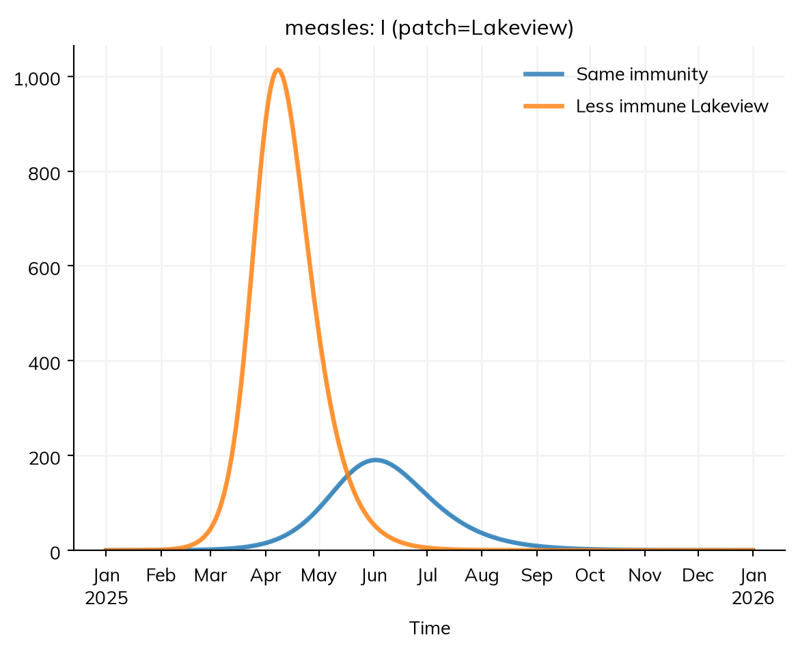
Same immunity - infections in each town:
Riverton 8795.0
Hillside 3521.0
Lakeview 1760.0
Fairfield 880.0
Name: infection, dtype: float64
Less immune Lakeview - infections in each town:
Riverton 8818.0
Hillside 3531.0
Lakeview 5429.0
Fairfield 884.0
Name: infection, dtype: float64With less immunity, Lakeview has a much larger outbreak, about 5,400 infections (over a quarter of the town) rather than 1,800, which comes earlier and peaks higher: with more susceptible people, each case there infects more others, so the outbreak grows faster once it arrives. The other towns’ outbreaks hardly change, since their own immunity is unchanged: Lakeview’s larger outbreak sends a few more infectious visitors to them, but the size of an outbreak in each town is set mostly by that town’s own susceptible people.
2. A campaign in Riverton only.
measles = make_towns()
campaign = ss.vaccinate(efficacy=0.93, where=(measles.age < 15) & (measles.patch == 'Riverton'), coverage=0.8, at='2025-03-01')
sims = {
'No intervention': ss.Sim(measles, **settings),
'Campaign in Riverton': ss.Sim(measles, interventions=campaign, **settings),
}
msim = ss.parallel(sims)
for label, sim in zip(sims, msim.sims):
print(label, '- infections in each town:')
print(sim.results.measles.infection.by('patch').summarize().round())No intervention - infections in each town:
Riverton 8795.0
Hillside 3521.0
Lakeview 1760.0
Fairfield 880.0
Name: infection, dtype: float64
Campaign in Riverton - infections in each town:
Riverton 2367.0
Hillside 3479.0
Lakeview 1751.0
Fairfield 878.0
Name: infection, dtype: float64The campaign prevents about three quarters of the infections in Riverton, but almost none in the other towns. By 1 March, a little measles has already reached them, and as an ODE, the model has an outbreak in every town it reaches, as large as that town’s own immunity allows; fewer cases in Riverton only delay it. A stochastic run (as in the tutorial) would show whether fewer travelers from Riverton make it less likely that measles takes off in the smaller towns at all.
3. The radiation model.
sims = {
'Gravity': ss.Sim(make_towns(), **settings),
'Radiation': ss.Sim(make_towns(mobility=ss.geo.radiation(away=0.01)), **settings),
}
msim = ss.parallel(sims)
for label, sim in zip(sims, msim.sims):
peaks = sim.results.measles.I.by('patch').values.argmax(axis=0)
print(label, '- day of the peak in each town:', peaks)Gravity - day of the peak in each town: [118 141 152 161]
Radiation - day of the peak in each town: [118 142 152 156]The outbreaks come at about the same times, except in Fairfield, where it peaks five days earlier with the radiation model. In the gravity model, travel falls with the square of the distance, which puts Fairfield, the farthest town, far from everyone. In the radiation model, the share of travelers who go to a place depends on how many people live nearer than it, not on the distance itself, so a far place with few people in between is less cut off than under the gravity model.
T7 – Data and calibration
import starsim as ss
import pandas as pd
S, E, I, R = ss.states('S E I R')
beta = ss.par(0.14, bounds=[0.05, 0.5])
reported = ss.par(0.5, bounds=[0.05, 1])
infection = S >> E @ beta*I
progression = E >> I @ ss.days(10)
recovery = I >> R @ ss.days(8)
cases = ss.outcome(reported*infection)
measles = ss.Disease(infection, progression, recovery, cases,
init = dict(R=ss.by(age=[0.8, 0.92, 0.98])),
init_n = dict(I=10),
)
measles.stratify(age={0: 0.3, 15: 0.6, 65: 0.1})
contacts = ss.contacts(ages=[0, 15, 65], matrix=[[10, 6, 1], [3, 8, 1], [3, 6, 3]])
settings = dict(networks=contacts, total_pop=100_000, start='2025-01-01', stop='2026-01-01', verbose=0)
data = pd.read_csv('data/measles_cases.csv')1. Different starting guesses.
early = data[data.date <= '2025-03-12']
for label, df in [('All the data', data), ('Data to 12 March', early)]:
for guess in [dict(beta=0.14, reported=0.5), dict(beta=0.3, reported=0.2)]:
fit = ss.Sim(measles, pars=guess, data=df, **settings).fit(verbose=False)
print(label, '- starting from', guess, '- beta:', round(fit.pars.beta, 3), '- reported:', round(fit.pars.reported, 3), '- mismatch:', round(fit.mismatch, 4))All the data - starting from {'beta': 0.14, 'reported': 0.5} - beta: 0.162 - reported: 0.409 - mismatch: 0.0368
All the data - starting from {'beta': 0.3, 'reported': 0.2} - beta: 0.162 - reported: 0.409 - mismatch: 0.0368
Data to 12 March - starting from {'beta': 0.14, 'reported': 0.5} - beta: 0.19 - reported: 0.189 - mismatch: 0.0304
Data to 12 March - starting from {'beta': 0.3, 'reported': 0.2} - beta: 0.19 - reported: 0.189 - mismatch: 0.0304From either starting point, the fit to all the data finds the same values (β ≈ 0.162, 41% reported): the fit starts by scanning the whole range within the bounds, and then searches from the best few points of the scan, so it doesn’t depend much on the starting guesses. Fitted to the data up to 12 March, both starting points also agree, but on the wrong values (β ≈ 0.19, 19% reported), and with a smaller mismatch than the fit to all the data. Searches that agree show that the search has found the best fit to the data it was given, not that the data pin the values down: here the rise of the outbreak alone fits equally well with more infections and less of them reported, and the search settles on one of many nearly equal answers.
2. Fitting β only.
fit_both = ss.Sim(measles, data=data, **settings).fit(verbose=False)
fit_beta = ss.Sim(measles, data=data, **settings).fit(pars=['beta'], verbose=False)
for label, fit in [('Both fitted', fit_both), ('Reported fixed at 50%', fit_beta)]:
res = fit.sim.results.measles
print(label, '- beta:', round(fit.pars.beta, 3), '- mismatch:', round(fit.mismatch, 3), '- infections:', round(res.infection.sum()), '- reported cases:', round(res.cases.sum()))
fit_beta.plot()Both fitted - beta: 0.162 - mismatch: 0.037 - infections: 9400 - reported cases: 3844
Reported fixed at 50% - beta: 0.152 - mismatch: 0.141 - infections: 9159 - reported cases: 4580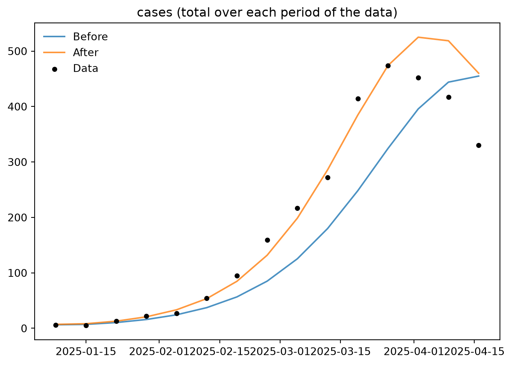
With the reported share fixed at 50%, too high, the fit finds a smaller β (about 0.152) and fits about four times worse: with too many of its infections reported, the model can’t match both the rise of the data and its peak: it overshoots the peak, and falls too slowly after it. It projects about the same number of infections over the year, since here the size of the outbreak is set mostly by the immunity in the town, but about a fifth more reported cases than the fit of both parameters. A fit that is much worse than another with one more parameter free is a sign that a fixed value is wrong.
3. A campaign on 1 April.
sims = {'No intervention': fit_both.sim}
for date in ['2025-04-01', '2025-05-01']:
campaign = ss.vaccinate(efficacy=0.93, where=measles.age < 15, coverage=0.8, at=date)
sims['Campaign on ' + date] = fit_both.sim.new(interventions=campaign)
msim = ss.parallel(sims)
msim.summarize().loc['measles_cases']| value | |
|---|---|
| scenario | |
| No intervention | 3843.774907 |
| Campaign on 2025-04-01 | 3116.343090 |
| Campaign on 2025-05-01 | 3727.499232 |
A campaign on 1 April, at about the peak, would have prevented about 700 reported cases (about a fifth of them), six times as many as one on 1 May.
T8 – Stratification and co-transmission
import starsim as ss
def make_measles():
""" The SEIR model of measles, by age, with nobody immune yet """
S, E, I, R = ss.states('S E I R')
infection = S >> E @ 0.14*I
progression = E >> I @ ss.days(10)
recovery = I >> R @ ss.days(8)
measles = ss.Disease(infection, progression, recovery, init_n=dict(I=10), name='measles')
measles.stratify(age={0: 0.3, 15: 0.6, 65: 0.1})
return measles
def make_community_measles(coverage=0.6, rate=None):
""" The measles model by age, community, and vaccination, with the coverage in the community and a catch-up rate in each community """
split = ss.by([[0.02, 0.98], [1-coverage, coverage]], dims=['community', 'vaccinated'])
transfers = {}
if rate is not None:
transfers['catchup'] = ss.transfer(vaccinated=True, rate=ss.peryear(ss.by(community=rate)), states=['S'])
measles = make_measles()
measles.stratify(community={'general': 0.95, 'close-knit': 0.05})
measles.stratify(vaccinated=[False, True], split=split, states=['S'], adjust={'rel_sus': [1, 0.03]}, **transfers)
return measles
age_contacts = [[10, 6, 1], [3, 8, 1], [3, 6, 3]]
clustered = ss.contacts(dict(age=age_contacts, community=[[0.984, 0.016], [0.3, 0.7]]), ages=[0, 15, 65])
settings = dict(networks=clustered, total_pop=100_000, start='2025-01-01', stop='2026-01-01', verbose=0)1. Higher coverage in the community.
for coverage in [0.6, 0.8]:
sim = ss.Sim(make_community_measles(coverage=coverage), **settings).run()
res = sim.results.measles
print('Coverage in the community', coverage, '- infections in the community:', round(res.infection.select(community='close-knit').sum()), '- in the rest of the town:', round(res.infection.select(community='general').sum()))Coverage in the community 0.6 - infections in the community: 2420 - in the rest of the town: 1720
Coverage in the community 0.8 - infections in the community: 1233 - in the rest of the town: 997With 80% coverage in the community, there are about 700 fewer infections in the rest of the town (about 1,000 rather than 1,700), although nothing has changed there. Since the rest of the town can’t sustain an outbreak on its own (its reproduction number is about 0.8), its infections are mostly seeded from the community, and each infection prevented in the community prevents the chains of infection that would have followed from it in the rest of the town. This is an indirect benefit of vaccination: a model that counted only the infections prevented in the people vaccinated would miss it.
2. The same doses outside the community.
sims = {
'No catch-up': ss.Sim(make_community_measles(), **settings),
'Catch-up in the community': ss.Sim(make_community_measles(rate=[0, 2]), **settings),
'Catch-up outside it': ss.Sim(make_community_measles(rate=[0.5, 0]), **settings),
}
msim = ss.parallel(sims)
for sim in msim.sims:
res = sim.results.measles
doses = res.catchup.sum() if 'catchup' in res else 0
print(sim.label, '- doses:', round(doses), '- infections:', round(res.infection.sum()))No catch-up - doses: 0 - infections: 4140
Catch-up in the community - doses: 605 - infections: 3125
Catch-up outside it - doses: 593 - infections: 3932A rate of 0.5 a year outside the community gives about the same number of doses (about 600), but prevents only about 200 infections, against about 1,000 for the doses given in the community: five times fewer for each dose. Outside the community, most unvaccinated people are surrounded by vaccinated ones and are unlikely to be infected anyway; in the community, each dose removes someone from where the outbreak is spreading. Stratifying by community is what lets the model show this.
3. A measles campaign, and pneumococcus.
ages = {0: 0.3, 15: 0.6, 65: 0.1}
contacts = ss.contacts(ages=[0, 15, 65], matrix=age_contacts)
settings = dict(networks=contacts, total_pop=100_000, start='2025-01-01', stop='2028-01-01', unit='day', verbose=0)
S, E, I, A, R = ss.states('S E I A R')
infection = S >> E @ 0.14*I
progression = E >> I @ ss.days(10)
recovery = I >> A @ ss.days(8)
restored = A >> R @ ss.years(2)
measles = ss.Disease(infection, progression, recovery, restored,
init = dict(R=ss.by(age=[0.8, 0.92, 0.98])),
init_n = dict(I=10),
name = 'measles',
)
measles.stratify(age=ages)
S, C = ss.states('S C')
acquisition = S >> C @ 0.003*C
clearance = C >> S @ ss.days(30)
pneumococcus = ss.Disease(acquisition, clearance, init=dict(C=ss.by(age=[0.25, 0.17, 0.17])), name='pneumococcus')
pneumococcus.stratify(age=ages)
amnesia = ss.modify(pneumococcus.rel_sus, multiply=2, where=measles.I | measles.A)
campaign = ss.vaccinate(efficacy=0.93, where=measles.age < 15, coverage=0.8, at='2025-02-01', disease='measles')
sims = {}
for label, connectors in [('Independent', None), ('Interacting', amnesia)]:
sims[label] = ss.Sim([measles, pneumococcus], connectors=connectors, **settings)
sims[label + ', campaign'] = ss.Sim([measles, pneumococcus], connectors=connectors, interventions=campaign, **settings)
msim = ss.parallel(sims)
summary = msim.summarize()
print(summary.loc['measles_infection'])
summary.loc['pneumococcus_acquisition'] value
scenario
Independent 8795.505567
Independent, campaign 850.697309
Interacting 8795.505567
Interacting, campaign 850.697312| value | |
|---|---|
| scenario | |
| Independent | 706696.485662 |
| Independent, campaign | 706696.485662 |
| Interacting | 812411.679520 |
| Interacting, campaign | 715868.388167 |
The campaign prevents about 7,900 of the 8,800 measles infections, the same with or without the interaction. Without it, the campaign prevents no pneumococcus at all, since the two diseases are independent. With it, the campaign also prevents about 97,000 pneumococcus acquisitions over the three years (nearly all of the extra ones that measles caused), about 12 for each measles infection prevented, both among the children spared measles and among the people they would have passed pneumococcus to. An evaluation of measles vaccination that counted only measles would miss this benefit, which is why the estimates of immune amnesia matter for the case for measles vaccination.
T9 – Custom modules
import starsim as ss
S, E, I, R = ss.states('S E I R')
infection = S >> E @ 0.16*I
progression = E >> I @ ss.days(10)
recovery = I >> R @ ss.days(8)
cases = ss.outcome(0.4*infection)
measles = ss.Disease(infection, progression, recovery, cases,
init = dict(R=ss.by(age=[0.8, 0.92, 0.98])),
init_n = dict(I=10),
name = 'measles',
)
measles.stratify(age={0: 0.3, 15: 0.6, 65: 0.1})
contacts = ss.contacts(ages=[0, 15, 65], matrix=[[10, 6, 1], [3, 8, 1], [3, 6, 3]])
settings = dict(networks=contacts, total_pop=100_000, start='2025-01-01', stop='2026-01-01', verbose=0)
class VaccineDemand(ss.Intervention):
""" Unvaccinated people seek vaccination at a rate that rises with the outbreak cases they remember """
def __init__(self, memory=ss.days(30), half=300, max_rate=ss.perweek(0.1), capacity=None, efficacy=0.93, **kwargs):
super().__init__()
self.define_pars(memory=memory, half=half, max_rate=max_rate, capacity=capacity, efficacy=efficacy)
self.update_pars(**kwargs)
self.remembered = 0.0
return
def init_results(self):
super().init_results()
self.define_results(
ss.Result('doses', kind='flow', scale=False, label='Doses given'),
ss.Result('remembered', kind='stock', scale=False, label='Cases remembered'),
)
return
def share(self):
""" The share of the highest demand, from the cases remembered """
return self.remembered/(self.remembered + self.pars.half)
def step(self):
measles = self.sim.diseases.measles
dt = self.t.dt
self.remembered += self.sim.results.measles.cases[self.ti-1] - self.remembered*(dt/self.pars.memory)
doses = (self.pars.max_rate*self.share()).to_prob(dt)*measles.count(measles.S)
if self.pars.capacity is not None:
doses = min(doses, self.pars.capacity.to_events(dt))
ss.move(measles.S, measles.R, n=doses*self.pars.efficacy)
self.results.doses[self.ti] = doses
self.results.remembered[self.ti] = self.remembered
returnThe module is the one from the tutorial, with the share of the highest demand as a method of its own (share()), so that exercise 2 can use it too.
1. How long people remember.
baseline = ss.Sim(measles, **settings).run().results.measles.infection.sum()
sims = {str(days) + ' days': ss.Sim(measles, interventions=VaccineDemand(memory=ss.days(days)), **settings) for days in [10, 30, 90]}
msim = ss.parallel(sims)
for sim in msim.sims:
res = sim.results
doses = res.vaccinedemand.doses.sum()
prevented = baseline - res.measles.infection.sum()
print('Memory of', sim.label, '- doses:', round(doses), '- infections prevented:', round(prevented), '- per dose:', round(prevented/doses, 2))Memory of 10 days - doses: 3454 - infections prevented: 3104 - per dose: 0.9
Memory of 30 days - doses: 4916 - infections prevented: 3961 - per dose: 0.81
Memory of 90 days - doses: 6093 - infections prevented: 4342 - per dose: 0.71The longer people remember, the more doses are sought (about 3,500 with a memory of 10 days, 4,900 with 30, and 6,100 with 90), and the more infections are prevented (about 3,100, 4,000, and 4,300). But each extra dose prevents fewer: about 0.9 infections a dose with a memory of 10 days, and 0.7 with 90. A longer memory adds doses mostly after the peak, when people still remember the outbreak but most of those it would infect have already been infected; a dose given then protects someone who was unlikely to be infected anyway.
2. Avoiding contact as well.
def avoidance(sim):
""" Susceptibility falls by up to 30% as people remember more cases """
return 1 - 0.3*sim.interventions.vaccinedemand.share()
sims = {
'Vaccine demand': ss.Sim(measles, interventions=VaccineDemand(), **settings),
'Vaccine demand and avoidance': ss.Sim(measles, interventions=[VaccineDemand(), ss.modify(measles.rel_sus, multiply=avoidance)], **settings),
}
msim = ss.parallel(sims)
msim.plot('measles.I')
msim.summarize().loc['measles_infection']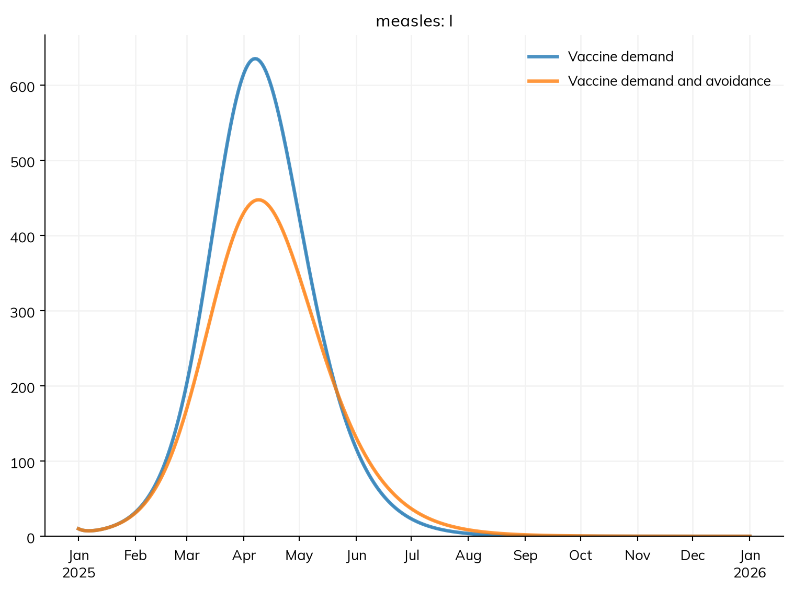
| value | |
|---|---|
| scenario | |
| Vaccine demand | 5396.516150 |
| Vaccine demand and avoidance | 4396.978646 |
Avoiding contact as well makes the outbreak about a fifth smaller again (about 4,400 infections rather than 5,400). The function reads the module from the sim (sim.interventions.vaccinedemand), not from a variable outside it, since the sim works on its own copy of each module; and since neither the module nor the modifier keeps anything for each person, the sim still runs as an ODE.
3. As agents.
sims = {
'ODE': ss.Sim(measles, interventions=VaccineDemand(), **settings),
'Agents': ss.Sim(measles, interventions=VaccineDemand(), n_agents=100_000, **settings),
}
msim = ss.parallel(sims)
for sim in msim.sims:
res = sim.results
print(sim.label, '(' + sim.solver + ') - infections:', round(res.measles.infection.sum()), '- doses:', round(res.vaccinedemand.doses.sum()))ODE (ode) - infections: 5397 - doses: 4916
Agents (abm) - infections: 5469 - doses: 4802The module runs unchanged as agents, and the two agree to within a few percent; the agents are one run of a random process, so they differ a little from run to run. The module needs no change because it uses only what works under every solver: a result of the sim (cases), the number of people in a state (measles.count(measles.S)), and ss.move() with a number of people, which as agents moves that many agents (chosen at random) from S to R. A module that picked out particular people, e.g. with measles.S.uids, would run only as agents (A5).
A1 – Diseases
These solutions build on the SIRS model from the tutorial, so we define it again here, with the duration of immunity and the latent period as arguments:
import numpy as np
import matplotlib.pyplot as plt
import starsim as ss
ss.options(jupyter=True)
def make_cold(dur_imm=ss.days(180), dur_latent=None):
""" A respiratory infection with waning immunity: SIRS, or SEIRS with a latent period; β is 0.4 per day """
S, E, I, R = ss.states('S E I R')
if dur_latent is None: # SIRS
transitions = dict(infection=S >> I @ ss.perday(0.4)*I)
else: # SEIRS
transitions = dict(infection=S >> E @ ss.perday(0.4)*I, progression=E >> I @ dur_latent)
transitions['recovery'] = I >> R @ ss.days(7)
transitions['waning'] = R >> S @ dur_imm
infections = ss.attr(1, on=transitions['infection'], combine='sum', init=0)
states = [S, I, R] if dur_latent is None else [S, E, I, R]
return ss.Disease(*states, **transitions, infections=infections, init_prev=0.01, name='cold')
pars = dict(n_agents=5000, stop=ss.days(3*365), dt=ss.days(1), verbose=0)Question 1
Q: Try different durations of immunity in the SIRS model (e.g. 1, 6, and 24 months). How do they affect the epidemic curve, and the number of times people are infected?
A: The shorter immunity is, the faster the susceptible pool is replenished, so transmission settles at a higher endemic level, and people are infected more often. With long-lasting immunity the model behaves much more like SIR: a single epidemic, followed by a long gap before the next wave:
sims = {
'1 month': ss.Sim(make_cold(ss.months(1)), **pars),
'6 months': ss.Sim(make_cold(ss.months(6)), **pars),
'24 months': ss.Sim(make_cold(ss.months(24)), **pars),
}
msim = ss.parallel(sims)
msim.plot('cold.I')
for label, sim in sims.items():
print(label, '- mean number of infections per person:', round(sim.people.cold.infections.values.mean(), 1))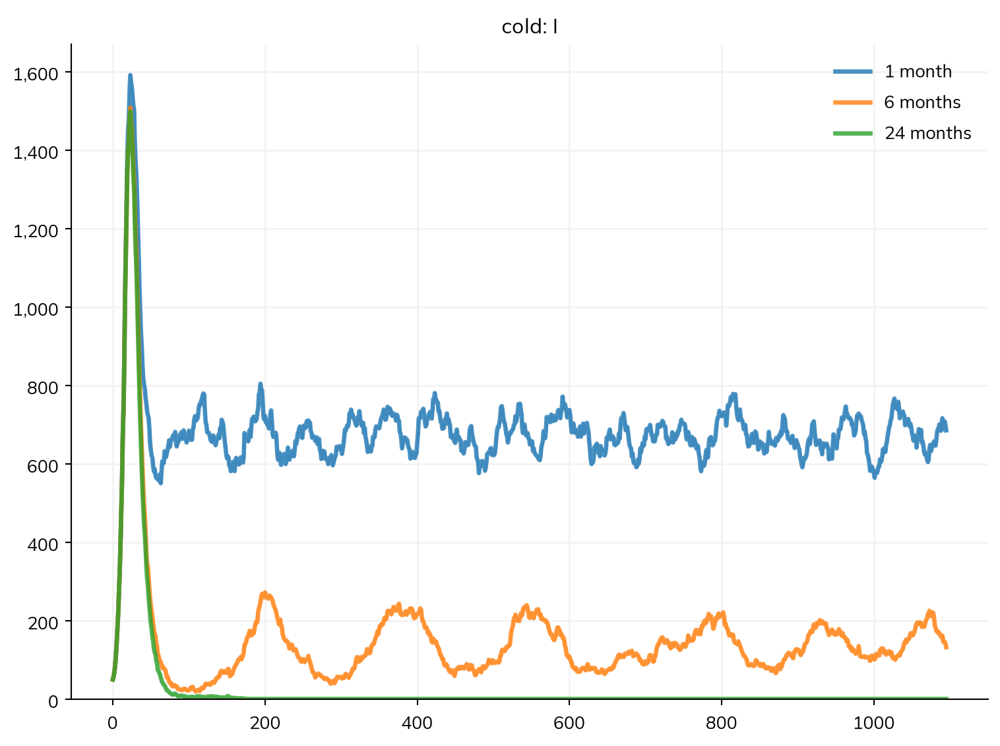
1 month - mean number of infections per person: 18.9
6 months - mean number of infections per person: 4.3
24 months - mean number of infections per person: 0.9Question 2
Q: Add a latent period of 2 days to the SIRS model, to make an SEIRS model. Does it change the endemic level?
A: The latent period slows each generation of infections, so the first epidemic comes later and has a lower peak, and the waves that follow are out of step with those of the SIRS model. The endemic level of people infectious changes little, since it depends mostly on R0 and the duration of immunity, which are the same:
sims = {
'SIRS': ss.Sim(make_cold(), **pars),
'SEIRS': ss.Sim(make_cold(dur_latent=ss.days(2)), **pars),
}
msim = ss.parallel(sims)
msim.plot('cold.I')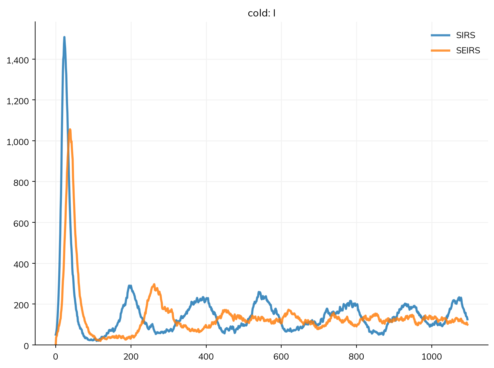
Question 3
Q: In the town with 90% immune, increase the share susceptible to 20% (init=dict(R=0.8)), so that each case infects about 3 others. What share of introductions die out now, with and without superspreading (k = 0.2)?
A: Without superspreading, a share of about 1/R ≈ 1/3 die out. With superspreading, many more do, since most cases still infect nobody:
def make_sim(k=None, immune=0.8):
S, E, I, R = ss.states('S E I R')
infection = S >> E @ 1.9*I
progression = E >> I @ ss.days(10)
recovery = I >> R @ ss.days(8)
init = dict(init=dict(R=immune), init_n=dict(I=1))
sim_pars = dict(n_agents=5000, stop=ss.days(365), verbose=0)
if k is None:
measles = ss.Disease(infection, progression, recovery, **init)
return ss.Sim(measles, **sim_pars)
infectiousness = ss.attr(ss.gamma(a=k, scale=1/k))
measles = ss.Disease(infection, progression, recovery, infectiousness=infectiousness, **init)
superspreading = ss.modify(measles.rel_trans, multiply=infectiousness)
return ss.Sim(measles, connectors=superspreading, **sim_pars)
for label, k in {'Everyone equally infectious': None, 'k = 0.2': 0.2}.items():
msim = ss.parallel(make_sim(k), n_runs=100)
total = msim.results.measles.infection.values.sum(axis=1)
print(label, '- share that die out:', np.mean(total < 20))Everyone equally infectious - share that die out: 0.33
k = 0.2 - share that die out: 0.82A2 – Networks
Exercise 1
Q: Repeat the comparison of contacts for a less infectious disease, with a chance of infection of 0.083 per contact per day. How much does it matter now that people meet the same contacts every day, and why?
A: With a chance of infection of 0.083 per contact per day and 3 contacts a day, R0 is about 0.083 × 3 × 8 ≈ 2 with random mixing:
import starsim as ss
import starsim.library as ssl
ss.options(jupyter=True)
S, I, R = ss.states('S I R')
infection = S >> I @ 0.083*I
recovery = I >> R @ ss.days(8)
disease = ss.Disease(infection, recovery, init_prev=0.001, name='disease')
pars = dict(n_agents=10_000, stop=ss.days(200))
sims = {
'Well mixed': ss.Sim(disease, networks=ss.MixingPool(n_contacts=3), **pars),
'New contacts each day': ss.Sim(disease, networks=ss.RandomNet(n_contacts=3), **pars),
'Same contacts every day': ss.Sim(disease, networks=ss.RandomNet(n_contacts=3, dynamic=False), **pars),
}
msim = ss.parallel(sims)
msim.plot('disease.I')
msim.summarize().loc['disease_infection']MultiSim: 3 runs of 3 scenarios (Well mixed, New contacts each day, Same contacts every day)
Done in 0.44 s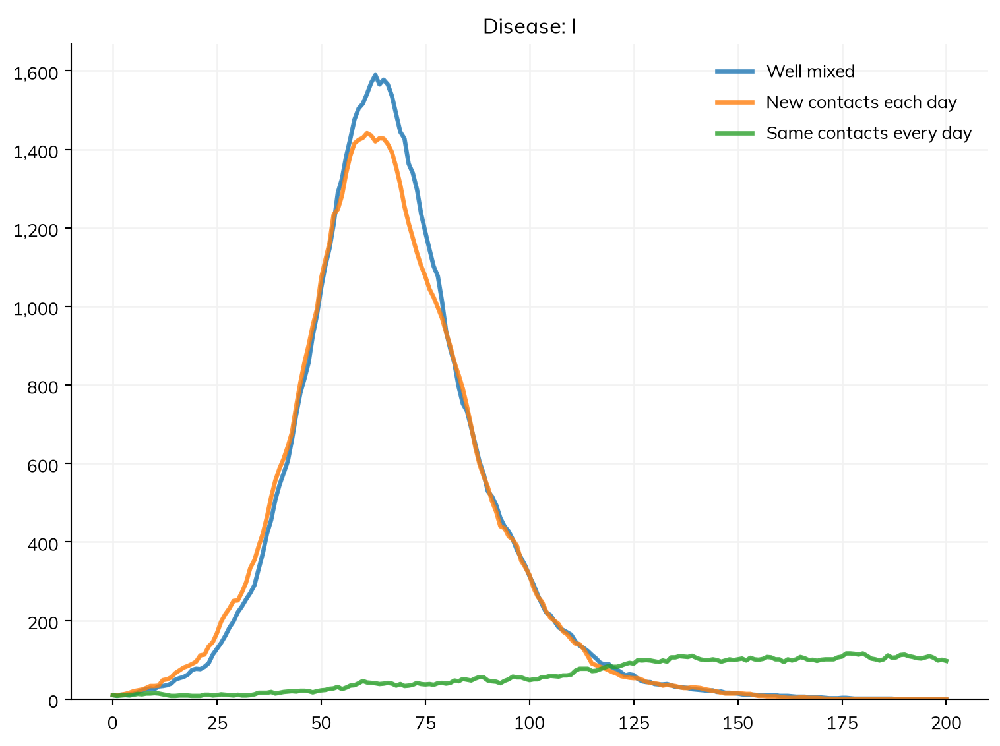
| value | |
|---|---|
| scenario | |
| Well mixed | 7851.0 |
| New contacts each day | 7669.0 |
| Same contacts every day | 1421.0 |
Now it matters a great deal: with random mixing, most people are infected, but with the same 3 contacts every day, far fewer (how many varies a lot from one run to the next, since the outbreak can stall early or find its way through). Over a contact that lasts for the whole infectious period, the chance of passing the infection on is only about 1 − e^(−0.083 × 8) ≈ 50%, and one of each person’s 3 contacts is usually the person who infected them, so each case infects on average not much more than one new person. Measles passes along nearly every link, so for measles the network changed the timing but not the size of the outbreak.
Exercise 2
Q: Give the network with partnerships of a year n_contacts=1 and concurrency=0.2. Does the infection persist?
S, I = ss.states('S I')
infection = S >> I @ ss.peract(m2f=0.1, f2m=0.05)*I
recovery = I >> S @ ss.months(6)
sti = ss.Disease(infection, recovery, init_prev=0.05)
pars = dict(n_agents=5000, start=2000, stop=2030, dt=ss.months(1))
sims = {
'One partner at a time': ss.Sim(sti, networks=ss.SexualNet(dur=ss.years(1)), **pars),
'20% with more than one': ss.Sim(sti, networks=ss.SexualNet(dur=ss.years(1), n_contacts=1, concurrency=0.2), **pars),
}
msim = ss.parallel(sims)
msim.plot('sti.I')MultiSim: 2 runs of 2 scenarios (One partner at a time, 20% with more than one)
Done in 0.8 s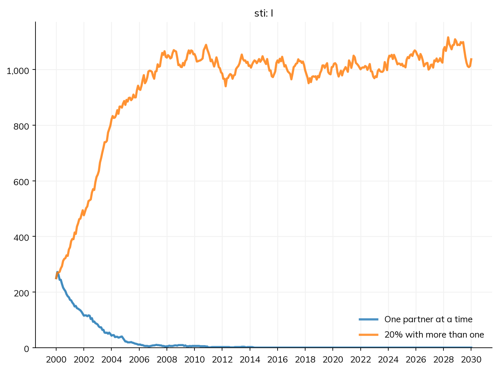
A: Yes: with 20% of people having more than one partner at a time, the infection persists. Someone with two partners can pass the infection from one partnership to the other without waiting for either to end, which is why concurrency matters so much for sexually transmitted infections.
Exercise 3
Q: Add transmission between men, with a second network ss.SexualNet(name='msm', between='mm', dur=ss.months(3)) and a β for each network. How much does it add?
A: β is given as a dict, with a value for each network by name. Between men, the chance per act is the same in both directions, so it is a single number:
S, I = ss.states('S I')
beta = dict(
sexualnet = ss.peract(m2f=0.1, f2m=0.05), # Between men and women
msm = ss.peract(0.1), # Between men
)
infection = S >> I @ beta*I
recovery = I >> S @ ss.months(6)
sti = ss.Disease(infection, recovery, init_prev=0.05)
pars = dict(n_agents=5000, start=2000, stop=2030, dt=ss.months(1))
mf = ss.SexualNet(dur=ss.months(3))
msm = ss.SexualNet(name='msm', between='mm', dur=ss.months(3))
sti_mf = ss.Disease(S >> I @ ss.peract(m2f=0.1, f2m=0.05)*I, recovery, init_prev=0.05, name='sti')
sims = {
'Between men and women only': ss.Sim(sti_mf, networks=mf, **pars),
'Also between men': ss.Sim(sti, networks=[mf, msm], **pars),
}
msim = ss.parallel(sims)
msim.plot('sti.I')MultiSim: 2 runs of 2 scenarios (Between men and women only, Also between men)
Done in 0.99 s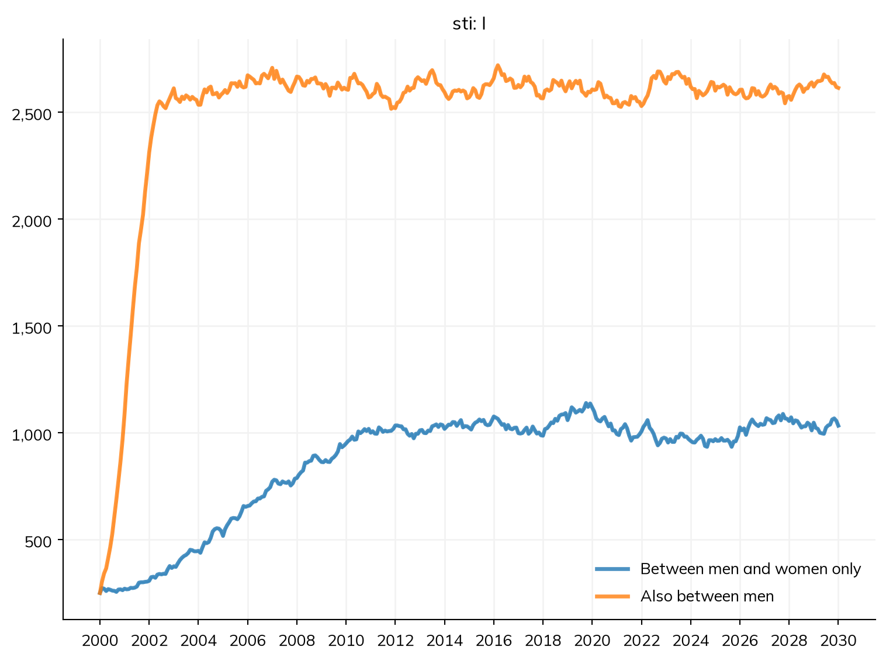
The network between men adds its own chains of transmission, and the infection settles at a much higher level, more than twice as many infected. Who is in it, and how many partners they have, matters as much as the chance per act: in a model of a real setting, the share of men who take part (participation=) would be much smaller than the default.
Exercise 4
Q: Add households to the measles model, with a community mixing pool with 2 contacts a day. How much do households add?
S, I, R = ss.states('S I R')
infection = S >> I @ 0.19*I
recovery = I >> R @ ss.days(8)
measles = ss.Disease(infection, recovery, init_prev=0.001)
households = ssl.ClusterNet(cluster_size=ss.poisson(4))
pars = dict(n_agents=10_000, stop=ss.days(100))
sims = {
'Community only': ss.Sim(measles, networks=ss.MixingPool(n_contacts=2), **pars),
'Households and community': ss.Sim(measles, networks=[households, ss.MixingPool(n_contacts=2)], **pars),
}
msim = ss.parallel(sims)
msim.plot('measles.I')
msim.summarize().loc['measles_infection']MultiSim: 2 runs of 2 scenarios (Community only, Households and community)
Done in 0.28 s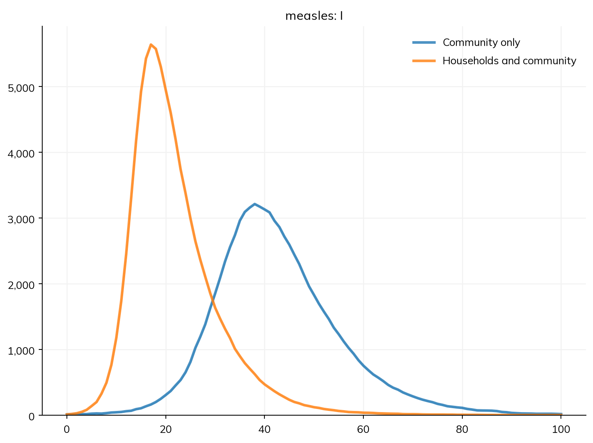
| value | |
|---|---|
| scenario | |
| Community only | 9417.0 |
| Households and community | 9940.0 |
A: The community alone gives an R0 of 0.19 × 2 × 8 ≈ 3, and infects most people. Households make the epidemic faster and infect nearly everyone, but they add less than their number of contacts suggests: once one person in a household is infected, the others are soon infected too, so most household contacts after that are wasted.
A3 – Demographics
Exercise 1
Q: In Niger, the crude birth rate is 45 and the crude death rate is 9. Assuming these rates stay constant, and starting with its population in 2020, how many people will there be in 2040? Compare this with its UN birth and death rates.
A: We can build a simple demographic model with these rates, and another with the UN’s rates, then run them and compare the results:
import numpy as np
import matplotlib.pyplot as plt
import starsim as ss
ss.options(jupyter=True)
pars = dict(start=2020, stop=2040)
constant = ss.Sim(people=ss.people('Niger', n_agents=5000), demographics=[ss.birth(rate=ss.peryear(0.045)), ss.death(rate=ss.peryear(0.009))], **pars)
un = ss.Sim(people=ss.people('Niger', n_agents=5000), demographics=[ss.Births(birth_rate='Niger'), ss.Deaths(death_rate='Niger')], **pars)
msim = ss.parallel({'Constant rates': constant, 'UN rates': un})
msim.plot('alive')
for label, sim in zip(['Constant rates', 'UN rates'], msim.sims):
print(label, '- population in 2040:', round(sim.results.alive[-1]/1e6, 1), 'million')MultiSim: 2 runs of 2 scenarios (Constant rates, UN rates)
Done in 0.24 s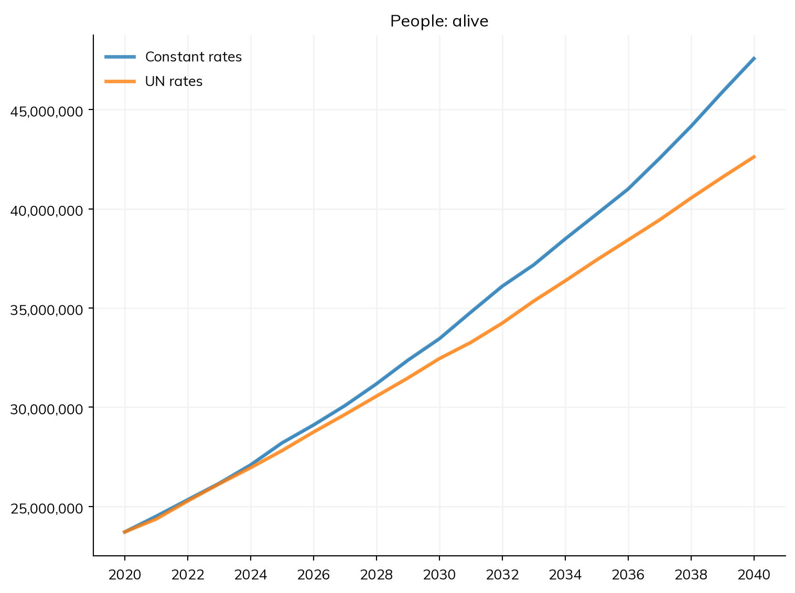
Constant rates - population in 2040: 47.6 million
UN rates - population in 2040: 42.6 millionWith a constant 45 births and 9 deaths per 1,000, the population roughly doubles in 20 years. The UN expects the birth rate to fall (and its death rates differ by age), so the two projections differ.
Exercise 2
Q: How does the time between epidemics in the ODE change if the birth rate (and the death rate) is 20 per 1,000 per year instead of 30? Does it agree with the theory?
S, I, R = ss.states('S I R')
infection = S >> I @ ss.perday(1.9)*I
recovery = I >> R @ ss.days(8)
measles = ss.Disease(infection, recovery, init_prev=0.001)
demographics = [ss.birth(rate=ss.peryear(0.02)), ss.death(rate=ss.peryear(0.02))]
sim = ss.Sim(measles, demographics=demographics, total_pop=20_000, start='2000-01-01', stop='2030-01-01', dt=ss.days(1))
sim.run()
res = sim.results.measles
plt.figure()
plt.semilogy(res.timevec, res.I)
plt.ylim(bottom=0.01)
plt.ylabel('Number infectious');Sim: measles, 20,000 people, as an ODE, 2000-01-01 to 2030-01-01
measles: R0 = 15.2, with 20 infectious at the start
Note: the number infected in "measles" falls to 0.94 (at 2000-03-26) and then rises to 374; a stochastic run would usually die out there. solver="gillespie" with ss.parallel(n_runs=...) shows how often, in the runs of msim.results.measles.I after that point
Done in 0.01 s; measles: 29,919 infections; at most 14,822 infectious, on 2000-01-07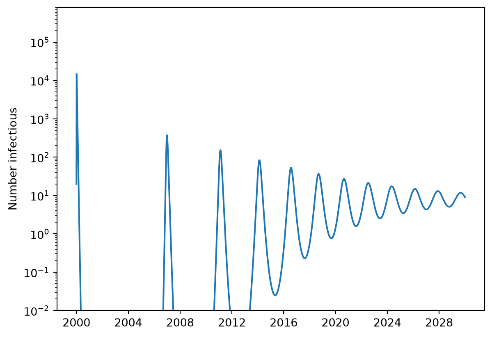
A: The epidemics are further apart, and the honeymoon after the first epidemic is longer: with fewer births, it takes longer to build up enough susceptible people for the next epidemic. The theory agrees: with a life expectancy of L = 1/0.02 = 50 years, the average age at infection is about 50/14 ≈ 3.5 years, and the time between epidemics is about 2π√(3.5 × 0.022) ≈ 1.7 years, rather than 1.4.
Exercise 3
Q: In the town with importations, how often do epidemics come if the town has 50,000 people instead? Does measles ever persist between them?
S, I, R = ss.states('S I R')
measles = ss.Disease(
infection = S >> I @ ss.perday(1.9)*I,
recovery = I >> R @ ss.days(8),
importation = S >> I @ ss.peryear(0.001),
init_prev = 0.001,
name = 'measles',
)
demographics = [ss.birth(rate=ss.peryear(0.03)), ss.death(rate=ss.peryear(0.03))]
pars = dict(demographics=demographics, start='2000-01-01', stop='2020-01-01', dt=ss.days(1), verbose=0)
plt.figure()
for label, n in {'20,000 people': 20_000, '50,000 people': 50_000}.items():
sim = ss.Sim(measles, n_agents=n, **pars)
sim.run()
plt.semilogy(sim.results.measles.timevec, sim.results.measles.I, label=label)
plt.ylim(bottom=0.5)
plt.ylabel('Number infectious')
plt.legend();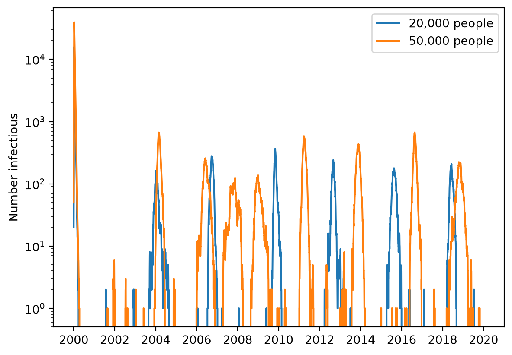
A: In the larger town, more children are born each year, so the susceptible people build up faster, and imported cases (which also come more often, since there are more susceptible people to be infected outside the town) start epidemics sooner: they come more often, and are larger. Measles still dies out between most of them, though: a town of 50,000 is still well below the critical community size of measles.
Exercise 4
Q: Add contraception (ss.modify(pregnancy.conception, multiply=0.7, start=2010)) to the Nigeria model with pregnancy. How many fewer people are there in 2030?
import pandas as pd
fertility = pd.read_csv('test_data/nigeria_asfr.csv')
pars = dict(start=2000, stop=2030, dt=ss.months(1))
sims = {}
for label in ['Baseline', 'Contraception']:
pregnancy = ss.Pregnancy(fertility_rate=fertility)
contraception = ss.modify(pregnancy.conception, multiply=0.7, start=2010) if label == 'Contraception' else None
people = ss.people('Nigeria', n_agents=5000)
sims[label] = ss.Sim(people=people, demographics=[pregnancy, ss.Deaths(death_rate='Nigeria')], interventions=contraception, **pars)
msim = ss.parallel(sims)
msim.plot('alive')
for label, sim in zip(sims, msim.sims):
print(label, round(sim.results.alive[-1]/1e6), 'million in 2030')MultiSim: 2 runs of 2 scenarios (Baseline, Contraception)
Done in 2.6 s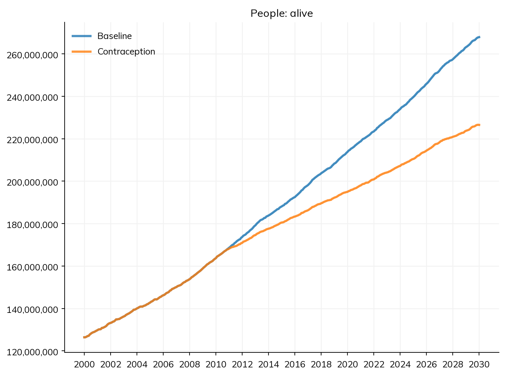
Baseline 268 million in 2030
Contraception 227 million in 2030A: Cutting conception by 30% from 2010 leaves about 40 million fewer people in 2030 (about 227 million rather than 268 million).
A4 – Interventions
These solutions use the model and interventions from the tutorial, so we define them again here:
import numpy as np
import starsim as ss
ss.options(jupyter=True)
S, I = ss.states('S I')
infection = S >> I @ ss.peract(m2f=0.1, f2m=0.05)*I
recovery = I >> S @ ss.months(6)
sti = ss.Disease(infection, recovery, init_prev=0.05)
settings = dict(
networks = ss.SexualNet(dur=ss.months(1), memory=ss.years(1)),
demographics = [ss.birth(rate=ss.peryear(0.02)), ss.death(rate=ss.peryear(0.02))],
n_agents = 5000,
start = 2000,
stop = 2020,
dt = ss.months(1),
verbose = 0,
)
drug = ss.Treatment(cure=0.95)
care = ss.treat(drug, on=sti.infection, coverage=0.3, delay=ss.uniform(ss.weeks(1), ss.months(2)))
young = (ss.ppl.age >= 15) & (ss.ppl.age < 30)
screening = ss.screen(sensitivity=0.9, specificity=0.98, where=young, coverage=0.5, interval=ss.months(6), start='2010')
treatment = ss.treat(drug, who=screening.positive)
notification = ss.treat(drug, who=screening.positive, trace='sexualnet', coverage=0.5)Question 1
Q: What happens if the partners of people who seek care are notified too (a second notification, with who=care)? Is the effect larger than notifying the partners of those found by screening?
A: A delivery is an event too, so who=care is the people treated after seeking care. Notifying their partners starts in 2000, rather than 2010, and starts from far more people than screening finds, so it has a much larger effect: here it keeps the infection at a low level from the start, and nearly eliminates it once screening begins.
care_notification = ss.treat(drug, who=care, trace='sexualnet', coverage=0.5)
scenarios = {
'Screening and notification': [care, screening, treatment, notification],
'Also notifying after care': [care, screening, treatment, notification, care_notification],
}
sims = {label: ss.Sim(sti, interventions=interventions, **settings) for label, interventions in scenarios.items()}
msim = ss.parallel(sims)
msim.plot('sti.I')
msim.summarize().loc['sti_infection']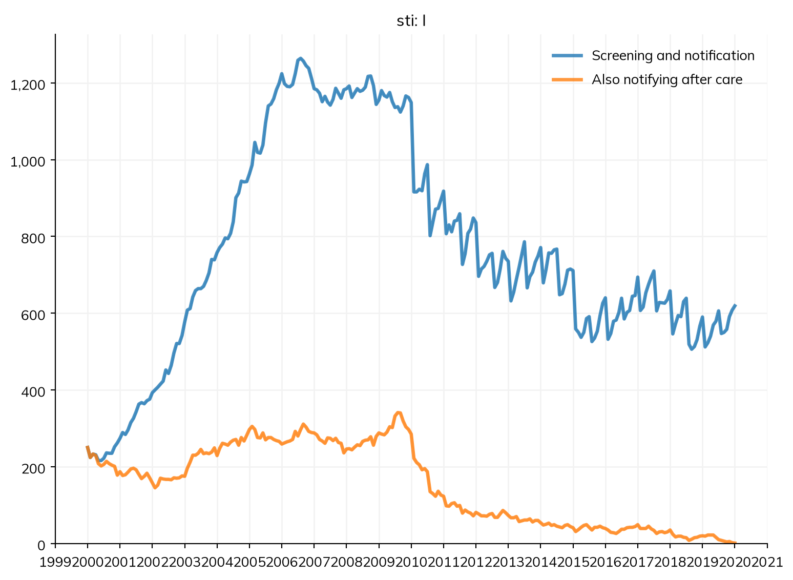
| value | |
|---|---|
| scenario | |
| Screening and notification | 35921.0 |
| Also notifying after care | 7970.0 |
Question 2
Q: How much does the effect change if screening reaches everyone aged 15 to 49? Which gives more infections prevented per test?
A: We compare each with treatment when seeking care alone (without partner notification, so that the effect is that of screening):
adults = (ss.ppl.age >= 15) & (ss.ppl.age < 50)
screening_adults = ss.screen(sensitivity=0.9, specificity=0.98, where=adults, coverage=0.5, interval=ss.months(6), start='2010', name='screening')
treatment_adults = ss.treat(drug, who=screening_adults.positive, name='treatment')
sims = {
'Treatment when seeking care': ss.Sim(sti, interventions=care, **settings),
'Screening 15-29': ss.Sim(sti, interventions=[care, screening, treatment], **settings),
'Screening 15-49': ss.Sim(sti, interventions=[care, screening_adults, treatment_adults], **settings),
}
msim = ss.parallel(sims)
msim.plot('sti.I')
baseline = msim.sims['Treatment when seeking care'].results.sti.infection.sum()
for label in ['Screening 15-29', 'Screening 15-49']:
sim = msim.sims[label]
prevented = baseline - sim.results.sti.infection.sum()
tests = sim.results.screening.delivered.sum()
print(label, '- tests:', tests, '- infections prevented:', prevented, '- per 100 tests:', round(100*prevented/tests, 1))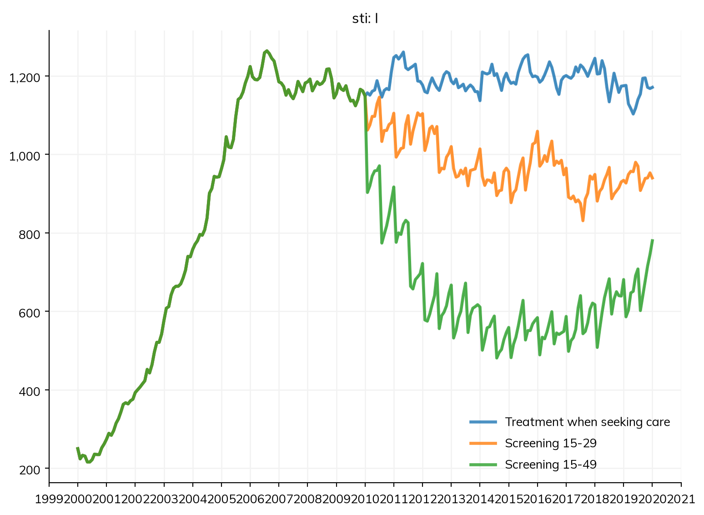
Screening 15-29 - tests: 9268.0 - infections prevented: 3456.0 - per 100 tests: 37.3
Screening 15-49 - tests: 20685.0 - infections prevented: 10183.0 - per 100 tests: 49.2Screening everyone aged 15 to 49 takes a little over twice as many tests, and prevents about three times as many infections, so it prevents more per test. In this model, partnerships don’t depend on age beyond sexual debut, so people over 30 are as much at risk as younger people; in a real setting, where infection is concentrated in young people, the answer could well be the reverse. Since each run is a single stochastic run, the infections prevented are uncertain; with several runs of each (n_runs=), the comparison per test would be clearer.
Question 3
Q: Add a catch-up campaign in 2010 for everyone aged 15 to 29. How much sooner does vaccination make a difference, and how many more doses does it take?
A: The two deliveries share one vaccine, so that nobody is protected twice:
vaccine = ss.Vaccine(efficacy=0.35)
vaccination = ss.vaccinate(vaccine, at_age=15, coverage=0.8, start='2010')
catch_up = ss.vaccinate(vaccine, where=young, coverage=0.8, at=['2010'])
sims = {
'Treatment when seeking care': ss.Sim(sti, interventions=care, **settings),
'And vaccination at age 15': ss.Sim(sti, interventions=[care, vaccination], **settings),
'And a catch-up campaign': ss.Sim(sti, interventions=[care, vaccination, catch_up], **settings),
}
msim = ss.parallel(sims)
msim.plot('sti.I')
sim = msim.sims['And a catch-up campaign']
print('Doses at age 15:', sim.results.vaccination.delivered.sum())
print('Doses in the catch-up campaign:', sim.results.catch_up.delivered.sum())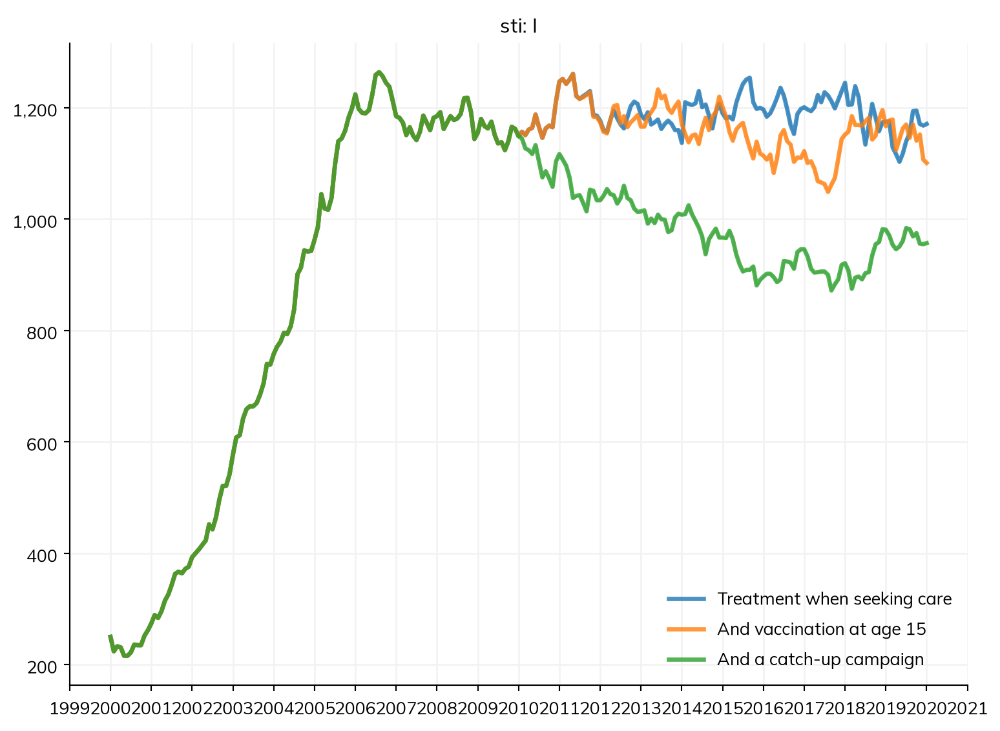
Doses at age 15: 538.0
Doses in the catch-up campaign: 824.0The catch-up campaign protects many of the people at risk at once, rather than waiting for them to be replaced by vaccinated cohorts, so the effect comes years sooner, for about two and a half times as many doses in all.
A5 – Custom modules
Question 1
Q: Change the half-life of the antibodies to 30 days and to 365 days. How does each change the endemic level of infection, compared with no immunity and with the all-or-nothing SIRS?
A: We define the infection and the Antibodies module from the tutorial again, and run them with each half-life:
import numpy as np
import starsim as ss
import starsim.library as ssl
ss.options(jupyter=True)
class Antibodies(ss.Module):
""" Each person's antibody level: 1 on recovery, then halving every half_life """
def __init__(self, half_life=ss.days(90), **kwargs):
super().__init__(**kwargs)
self.define_pars(half_life=half_life)
self.define_states(ss.FloatArr('level', default=0.0, label='Antibody level'))
return
def step(self):
self.level[:] = self.level*0.5**(self.t.dt/self.pars.half_life)
self.level[self.sim.diseases.cold.recovery.uids] = 1.0
return
S, I = ss.states('S I')
sis = ss.Disease(infection=S >> I @ 0.4*I, recovery=I >> S @ ss.days(7), init_prev=0.01, name='cold')
def susceptibility(sim):
return 1 - sim.custom.antibodies.level
pars = dict(networks=ss.MixingPool(n_contacts=1), n_agents=10_000, stop=ss.days(2*365), verbose=0)
S, I, R = ss.states('S I R')
sirs = ss.Disease(infection=S >> I @ 0.4*I, recovery=I >> R @ ss.days(7), waning=R >> S @ ss.days(180), init_prev=0.01, name='cold')
sims = {'No immunity': ss.Sim(sis, **pars), 'All or nothing': ss.Sim(sirs, **pars)}
for label, half_life in {'Half-life of 30 days': ss.days(30), 'Half-life of 365 days': ss.days(365)}.items():
protection = ss.modify(sis.rel_sus, multiply=susceptibility)
sims[label] = ss.Sim(sis, Antibodies(half_life=half_life), connectors=protection, **pars)
msim = ss.parallel(sims)
msim.plot('cold.I')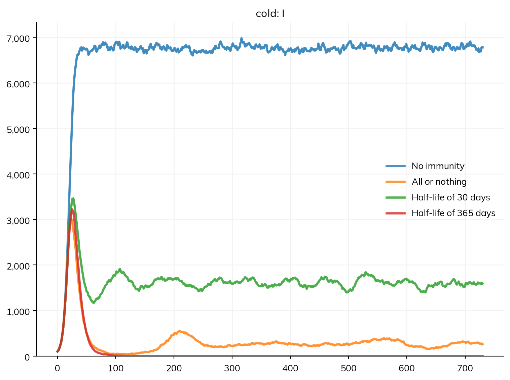
The longer the antibodies last, the lower the endemic level. With a half-life of 30 days, people regain most of their susceptibility within a couple of months, so the infection settles at about a quarter of its level with no immunity, but well above its level with the all-or-nothing SIRS (whose protection lasts 180 days on average). With a half-life of a year, almost everyone is still well protected long after the first wave, and the infection dies out.
Question 2
Q: Give AgeNet a parameter p_random, the share of each person’s contacts that are with anyone at random. How large does it have to be before the epidemic looks like the one with random contacts?
A: The simplest way is to keep AgeNet as it was, and add a random network beside it, splitting the 4 contacts a day between the two:
class AgeNet(ss.Network):
""" Contacts each day with people close in age """
def __init__(self, n_contacts=4, spread=ss.years(2), **kwargs):
super().__init__()
self.define_pars(n_contacts=n_contacts, spread=spread)
self.update_pars(**kwargs)
self.noise = ss.normal(0, 1)
return
def add_pairs(self):
uids = self.sim.people.alive.uids
age = self.sim.people.age[uids] + self.pars.spread.years*self.noise.rvs(uids)
order = uids[np.argsort(age, kind='stable')]
p1 = np.concatenate([order[:-k] for k in range(1, self.pars.n_contacts//2 + 1)])
p2 = np.concatenate([order[k:] for k in range(1, self.pars.n_contacts//2 + 1)])
self.append(p1=p1, p2=p2, beta=np.ones(len(p1)))
return
def step(self):
self.remove_edges(np.ones(len(self), dtype=bool))
self.add_pairs()
return
S, I, R = ss.states('S I R')
cold = ss.Disease(infection=S >> I @ 0.1*I, recovery=I >> R @ ss.days(7), init_prev=0.001, name='cold')
pars = dict(n_agents=5000, stop=ss.days(250), verbose=0)
sims = {
'All random': ss.Sim(cold, networks=ss.RandomNet(n_contacts=4), **pars),
'All close in age': ss.Sim(cold, networks=AgeNet(n_contacts=4), **pars),
'Half at random': ss.Sim(cold, networks=[AgeNet(n_contacts=2), ss.RandomNet(n_contacts=2)], **pars),
}
msim = ss.parallel(sims)
msim.plot('cold.I')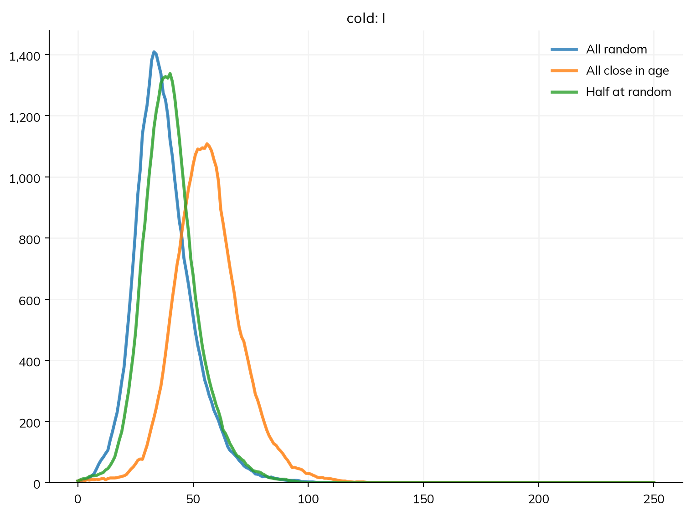
With half of the 4 contacts at random, the epidemic is almost the same as with all contacts random: a few long-range contacts are enough to carry the infection across the ages, as in a “small-world” network. (AgeNet pairs each person with an even number of neighbors, so to try smaller shares, give it more contacts and the random network fewer, keeping the total the same, e.g. 6 and 2.)
Question 3
Q: Write an SIRS in which immunity is lost with a constant chance each step, using an ss.bernoulli distribution in step_state(). Does it give the same epidemic?
A: A constant chance each step gives an exponential (or, in whole steps, geometric) duration of immunity, with the same mean as ss.expon(scale=ss.days(180)) if the chance per day is 1/180, so the waning works the same way. Run with daily steps, the first wave is smaller than in the tutorial, which used steps of a quarter of a day, for the reason given there:
class SIRS(ssl.AgentSIR):
def __init__(self, pars=None, *args, **kwargs):
super().__init__()
self.define_pars(p_wane=ss.bernoulli(p=1/180)) # The chance of losing immunity each day
self.update_pars(pars, **kwargs)
return
def step_state(self):
super().step_state()
waning = self.pars.p_wane.filter(self.recovered.uids) # Each recovered agent loses immunity with this chance
self.recovered[waning] = False
self.susceptible[waning] = True
return
coded = SIRS(beta=ss.perday(0.4), dur_inf=ss.expon(scale=ss.days(7)), p_death=0, init_prev=0.01, name='cold')
sim = ss.Sim(coded, networks=ss.MixingPool(n_contacts=1), n_agents=10_000, stop=ss.days(2*365), dt=ss.days(1), verbose=0)
sim.run()
sim.results.cold.infected.plot()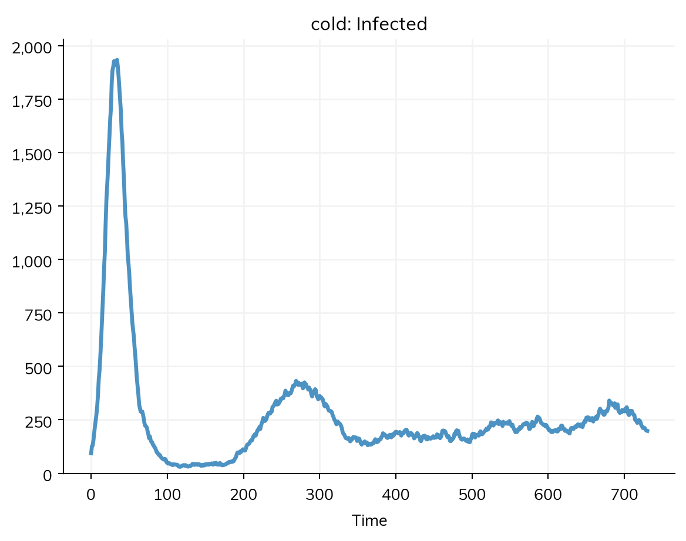
The chance is per step, so it is only right for a step of one day; a version that works for any step would convert a rate to a chance per step (e.g. ss.peryear(2).to_prob()), or schedule the time of waning at recovery, as the tutorial’s version does.